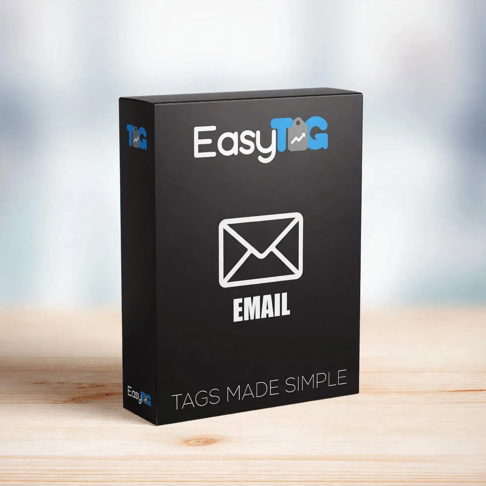

![Easy Tag]()
Tag nativo Google Ads: misurazione delle conversioni
Il riferimento ufficiale è la guida Google al tag Google.
Cos’è il tag nativo Google Ads
Il tag nativo Google Ads è il tag di conversione che misura, direttamente nell’account pubblicitario, le azioni che hai configurato come conversioni: un acquisto, l’invio di un modulo, una chiamata, un click su WhatsApp. Non è un report e non è un plugin del CMS. È uno script, di solito pubblicato tramite Google Tag Manager, che si attiva solo quando l’azione è realmente avvenuta e invia a Google Ads i parametri previsti da quell’azione.
Si chiama “nativo” per distinguerlo dall’importazione delle conversioni da Google Analytics 4. Nel primo caso l’evento nasce per Ads. Nel secondo caso l’evento nasce in GA4 e viene poi collegato all’account pubblicitario. Sono due strade legittime, con finestre, modelli di attribuzione e tempi di elaborazione diversi. Sceglierne una, o usarle insieme senza un piano, cambia il modo in cui le campagne leggono i risultati.
Un’implementazione seria non si limita a incollare uno snippet. Serve un’azione di conversione definita nell’account, un trigger affidabile sul sito, i parametri giusti (valore, valuta, identificativo) e una verifica che la stessa azione non venga contata due volte da configurazioni sovrapposte.
Perché conta per le campagne
Le strategie automatiche di Google Ads usano le conversioni come segnale. Se il segnale è in ritardo, incompleto o doppio, l’account ottimizza su una fotografia sbagliata del business. Non è un dettaglio da “sistemare dopo”: è la base con cui si decide se una campagna sta funzionando.
Il tag nativo è spesso utile quando l’azione da ottimizzare è vicina alla pubblicità e va osservata con le impostazioni dell’account Ads: azione primaria o secondaria, finestra di conversione, conteggio “una” oppure “ogni”, valore fisso o dinamico. GA4 resta lo strumento per capire i percorsi. Ads è lo strumento per dire alle campagne quale esito conta.
C’è anche un tema di tempi. L’elaborazione può variare tra piattaforme e tipi di conversione. Prima di confrontare un report Ads con un report GA4 nello stesso giorno, controlla diagnostica, stato dell’azione e finestre. Due numeri diversi non significano automaticamente un errore: possono descrivere regole diverse applicate agli stessi click.
- Azione primaria: è quella che le strategie di offerta possono usare. Tienila pochi e pulita.
- Conteggio: un lead di solito si conta una volta; un acquisto spesso ogni volta, con un identificativo ordine.
- Valore: se il margine cambia da ordine a ordine, un valore fisso appiattisce il segnale.
Conversion Linker e identificativi di clic
Il Conversion Linker aiuta a conservare le informazioni dell’interazione pubblicitaria nel contesto consentito dal browser e dalle impostazioni di consenso. I parametri di clic possono includere identificativi come gclid, e in alcuni percorsi wbraid o gbraid. Senza questo collegamento, una conversione avvenuta ore dopo il click può arrivare “orfana” e non attribuirsi alla campagna giusta.
Il linker va pubblicato su tutte le pagine del sito, non solo sulla thank-you page, e va allineato al consenso. Se l’utente non ha accettato la misurazione pubblicitaria, non ha senso forzare cookie o identificativi. Configura il tag secondo le indicazioni aggiornate di Google, verifica i domini coinvolti e, se il percorso attraversa più domini (sito, checkout esterno, sottodominio), controlla che il collegamento non si spezzi a metà.
In Google Tag Manager il Conversion Linker è un tag dedicato, con attivazione su tutte le pagine e rispetto del consenso. Non sostituisce il tag di conversione: lo prepara. I due pezzi lavorano in sequenza.
Azioni di conversione e valori dinamici
Ogni conversione utile deve avere un nome chiaro nell’account e un trigger altrettanto chiaro sul sito. “Tutti i click sul pulsante Invia” è fragile: il pulsante cambia classe, il form viene ricaricato, un utente clicca due volte. Meglio un evento del DataLayer che il sito pubblica solo quando l’azione è confermata, per esempio generate_lead dopo la risposta del server o purchase sulla pagina di ordine completato.
Per un e-commerce i campi che fanno la differenza sono pochi e vanno letti dal DataLayer, non indovinati dal testo della pagina:
- Valore: importo coerente con il criterio scelto (totale ordine, al netto di IVA o di spedizione: decidilo una volta e non cambiarlo a metà anno).
- Valuta: codice ISO, ad esempio
EUR. - Transaction ID: identificativo univoco dell’ordine, utile per limitare i doppi conteggi se la thank-you page viene ricaricata.
- Articoli: quando la configurazione li richiede, elenco prodotti con id, nome, prezzo e quantità.
Un esempio di messaggio che il tag può leggere, dopo che lo sviluppatore lo ha pubblicato a ordine confermato:
dataLayer.push({
event: 'purchase',
ecommerce: {
transaction_id: 'ORD-2026-98451',
value: 249.00,
currency: 'EUR'
}
});Il tag di conversione non deve attivarsi sul semplice caricamento di ogni pagina. Si attiva sull’evento. In GTM crei una variabile del livello dati per ecommerce.value, ecommerce.currency e ecommerce.transaction_id, e le mappi nei campi del tag Ads.
Conversioni avanzate, con i controlli giusti
Le conversioni avanzate usano dati forniti dall’utente — di solito un’email o un numero di telefono lasciati nel form o nel checkout — normalizzati e sottoposti a hashing secondo le specifiche di Google. Servono a recuperare conversioni che il browser, da solo, non riuscirebbe più a collegare al click, entro i limiti tecnici e di consenso del momento.
Non sono un interruttore da accendere “perché lo fanno tutti”. Prima di inviare qualsiasi dato personale verifica quattro cose: che l’azione di conversione supporti la funzione, che la base giuridica e l’informativa del sito lo consentano, che il consenso pubblicitario sia rispettato, e che i campi arrivino puliti (minuscolo, senza spazi, formato telefono coerente). Un’email scritta male o inviata senza consenso non migliora le campagne: crea un problema di conformità.
In GTM i dati si leggono da variabili dedicate, non si scrivono in chiaro nei commenti del contenitore. Documenta quali campi usi e su quali form. Se un modulo non raccoglie email, non inventare un valore.
Tag nativo oppure importazione da GA4
Google Ads e GA4 hanno finalità diverse. GA4 descrive il comportamento. Ads ottimizza la spesa. Importare una conversione da GA4 è comodo quando l’evento è già solido e vuoi una sola definizione. Il tag nativo è preferibile quando ti serve il controllo diretto sull’azione usata per le offerte, sui valori e sull’identificativo ordine, senza passare dal modello di GA4.
L’errore più frequente è averli entrambi come azioni primarie sulla stessa vendita. Le campagne vedono due conversioni per un solo ordine, il costo per acquisizione si dimezza sulla carta e le offerte si spostano. Scegli una fonte primaria per ciascun obiettivo e tieni l’altra, se ti serve, come secondaria di controllo.
Prima di decidere, controlla nell’account: quali azioni sono primarie, la finestra di conversione, il modello di attribuzione e se esistono già importazioni attive da GA4 o da un altro contenitore. Non esiste una regola universale che renda sempre migliore una delle due strade.
Come implementarlo in Google Tag Manager
La sequenza che usiamo nei progetti EasyTag Pro è ripetibile. Prima si sistema il piano di misurazione, poi il contenitore. Se la conversione è un click già in pagina, parti da Tracking Click Telefono, TAG Email o Contatti 3-in-1. Per valori prodotto e feed, Tracker E-commerce e Dynamic Remarketing.
- Nell’account Google Ads crea (o rivedi) l’azione: nome, categoria, valore, conteggio, finestra, inclusione nelle azioni primarie.
- Sul sito fai pubblicare dal DataLayer un evento solo a conversione confermata, con i campi necessari.
- In GTM pubblica il Conversion Linker su tutte le pagine, subordinato al consenso.
- Crea il tag di conversione Google Ads con ID e etichetta dell’azione, variabili dinamiche e trigger sull’evento, non su “tutte le pagine”.
- Se usi le conversioni avanzate, aggiungi solo i campi verificati e documentati.
- Anteprima: un solo sparo per ordine, parametri presenti, nessun secondo tag gemello.
Dopo la pubblicazione controlla la diagnostica dell’azione in Google Ads e Tag Assistant. I primi dati possono impiegare tempo a comparire nei report: la diagnostica del tag è il segnale più rapido che l’invio è partito.
Verifica e manutenzione
- Controlla che la thank-you page, ricaricata, non generi una seconda conversione: l’identificativo ordine è lì per questo.
- Allinea consenso e linker. Un tag che parte prima della scelta dell’utente sporca sia la privacy sia i numeri.
- Quando cambi tema, checkout o form, riesegui l’anteprima. Il DataLayer protegge dai cambi grafici solo se gli eventi restano quelli concordati.
- Tieni un registro: quale azione è primaria, da dove arriva il valore, chi ha pubblicato l’ultima versione del contenitore.
FAQ sul tag Google Ads
Il tag di conversione sostituisce Google Analytics 4?
No. Il tag Ads dice alle campagne quale azione è avvenuta. GA4 serve ad analizzare i percorsi. Possono convivere, a patto di non contare due volte la stessa azione come conversione primaria.
Devo mettere il tag su tutte le pagine?
Il Conversion Linker sì, su tutto il sito, nel rispetto del consenso. Il tag di conversione no: solo quando l’azione è confermata, tramite un trigger preciso.
Perché Ads e GA4 non mostrano lo stesso numero?
Perché applicano modelli, finestre e filtri diversi, e perché uno può includere conversioni che l’altro non importa. Confronta le definizioni prima di concludere che un tag è rotto.
Le conversioni avanzate sono obbligatorie?
No. Sono un’opzione utile in alcuni account, dopo aver verificato consenso, informativa e qualità dei dati. Senza questi controlli è meglio non attivarle.
Chi dovrebbe configurarlo?
Marketing e sviluppo insieme: il primo sceglie l’azione e il valore, il secondo pubblica l’evento nel DataLayer, chi gestisce GTM collega tag e trigger. EasyTag Pro fa questo raccordo quando in azienda non c’è una persona dedicata solo al tracking.
Conversioni Google Ads e remarketing
Qual è la differenza tra un evento di conversione Google Ads e un evento di remarketing?
La conversione registra un'azione di valore (acquisto, lead, chiamata, iscrizione) e alimenta i report e le offerte, per esempio Target CPA o Target ROAS. Il remarketing raccoglie segnali di navigazione o di prodotto per costruire pubblici. Il caso catalogo è il Dynamic Remarketing.
Come si invia una conversione Google Ads con gtag.js?
Con gtag('event', 'conversion', { send_to: 'AW-CONVERSION_ID/CONVERSION_LABEL', value: 0, currency: 'EUR', transaction_id: '...' }). In GTM lo stesso invio si fa col tag nativo, non con un HTML personalizzato.
A cosa serve il parametro send_to?
Indica l'account AW-... e l'etichetta di conversione a cui attribuire l'azione. Senza send_to preciso, un sito con più account manda il segnale alla destinazione sbagliata.
Quando usare transaction_id anche nelle conversioni Google Ads?
Sugli acquisti e su ogni azione che l'utente può ripetere ricaricando la pagina. Lo stesso id impedisce che la thank-you page conti due conversioni.
Come funzionano le conversioni avanzate e come si passano i dati utente?
Aggiungono al tag di conversione dati forniti dall'utente (email, telefono, nome, indirizzo), trattati secondo le specifiche Google, per recuperare conversioni che il solo cookie non vede. Non vanno messi in chiaro nei parametri di GA4. Il consenso pubblicitario è in Consent Mode.
Come si inviano i dati utente in GTM lato server per Google Ads?
Con una variabile User-provided data collegata al tag Google, e con il tag Google Ads User-provided Data Event nel server container, usando il Conversion ID corretto.
Cos'è il remarketing dinamico e in cosa differisce da quello standard?
Il remarketing standard usa liste di pagine visitate. Quello dinamico manda parametri di catalogo (value, currency, items con id e google_business_vertical) per mostrare gli articoli visti o abbandonati. È il perimetro del Dynamic Remarketing.
Quali parametri chiede il remarketing dinamico retail?
send_toverso la destinazione Ads corretta.valueecurrency.items, e in ogni elemento unididentico all'id prodotto del feed Merchant Center.google_business_vertical, per il retail di solitoretail.
Cosa succede se l'id prodotto non coincide con il feed Merchant Center?
Google Ads non abbina l'utente all'articolo del catalogo. L'annuncio dinamico non si personalizza, oppure usa un fallback generico.
Perché i modelli di tag nativi Google Ads in GTM e non un tag HTML personalizzato?
I modelli nativi formattano i parametri, parlano col Conversion Linker, rispettano il Consent Mode e restano allineati alle funzioni Ads più recenti. Un HTML personalizzato queste cose le reinventa, e di solito le rompe.
Valore, deduplica e consenso pubblicitario
Come si evita la doppia conversione se il sito ha sia gtag.js sia GTM?
Si tiene un solo sistema, di preferenza GTM con tag nativi, e si toglie l'altro invio dello stesso evento sullo stesso trigger. Due tag sulla stessa thank-you page contano due conversioni.
Come si tracciano azioni che non ricaricano la pagina, come un form AJAX o un clic sul telefono?
Il trigger deve ascoltare un event del dataLayer emesso solo dopo la conferma: per esempio form_submitted o phone_click. Il container già pronto per il numero è il Tracking Click Telefono; per telefono, email e WhatsApp insieme, Contatti 3-in-1.
A cosa servono value e currency in Google Ads?
Misurano il ritorno economico della conversione e alimentano le strategie basate sul valore: Massimizza il valore di conversione e Target ROAS. Senza valuta, il valore non è confrontabile.
Come si distinguono valori variabili e valori fissi?
Per ecommerce e preventivi il valore calcolato sta nel dataLayer, transazione per transazione: è il caso del Tracker E-commerce. Per un lead a valore costante si imposta un fisso nella conversione Ads, e lo si ripete identico.
Che differenza c'è tra importare una conversione da GA4 e usare il tag nativo Google Ads?
Il tag nativo manda il segnale direttamente a Google Ads, con Conversion Linker e conversioni avanzate. L'import da GA4 dipende dall'evento chiave e dal collegamento tra i due prodotti, ed è meno adatto quando ti serve il clic pubblicitario di prima parte. Il modello del tag nativo è il tema di questa guida.
Come si verifica che una conversione Google Ads parta senza errori?
In Anteprima di GTM o in Tag Assistant controlli trigger, variabili e stato del consenso. In Rete cerchi le richieste verso i domini pubblicitari Google, non solo il nome del tag in verde.
Cosa succede se il tag di conversione scatta prima che le variabili siano pronte?
value o transaction_id partono vuoti. Valore, valuta e id devono stare nello stesso oggetto del dataLayer.push che emette l'event, oppure essere già nello stato prima di quel push. La coda è spiegata nella guida DataLayer.
Come si gestisce il consenso sui tag di conversione e remarketing?
Con il Consent Mode: ad_storage, ad_user_data per i dati utente usati in pubblicità, ad_personalization per remarketing e annunci personalizzati. Il dettaglio dei comandi default e update è nella guida Consent Mode. Il pacchetto è Consent Mode v2.
Si può mandare un evento a un solo account Google Ads?
Sì. send_to sul tag o sull'evento limita la destinazione a quell'account e a quell'etichetta. Gli altri account collegati in pagina non ricevono quella conversione.
Che rapporto c'è tra il tag Google su tutte le pagine e la precisione delle conversioni?
Il tag presente su tutto il sito mantiene cookie e identificativi di prima parte lungo la sessione. Senza, il Conversion Linker non vede il clic sulla landing e l'attribuzione si accorcia.
Conversion Linker e cookie di prima parte
Cos'è il Conversion Linker e a cosa serve?
Memorizza in un cookie di prima parte i dati del clic pubblicitario, come il gclid, così il tag di conversione li ritrova quando l'azione avviene, anche pagine dopo.
Perché il Conversion Linker è indispensabile con i limiti ai cookie di terze parti?
I browser bloccano o accorciano i cookie di terze parti. Salvare il clic sul dominio del sito rende la conversione leggibile senza quel cookie di terza parte.
Su quali pagine deve attivarsi il Conversion Linker in GTM?
Su tutte, con attivatore All Pages. Qualsiasi landing che riceve un clic pubblicitario deve poter salvare subito il parametro.
Come funziona il Conversion Linker nel tagging lato server?
Nel server container il tag Conversion Linker, di solito su All Pages, scrive e legge i cookie di prima parte legati al dominio del server di tagging.
Qual è la differenza tra cookie di prima parte e di terze parti?
Il cookie di prima parte è impostato dal dominio della pagina che stai visitando. Quello di terze parti è impostato da un dominio diverso da quello della pagina.
Perché i cookie di prima parte reggono meglio la misura di oggi?
Appartengono al sito visitato e sfuggono al blocco generalizzato dei cookie di terze parti. Restano però soggetti al consenso e alle scadenze imposte dal browser.
Come browser e server possono comunque limitare i cookie di prima parte?
Con ITP e tetti di durata, con attributi sbagliati (Domain, Path, SameSite, Secure) e con il consenso negato su analytics_storage o ad_storage. Vedi Consent Mode.
Che legame c'è tra cookie di prima parte, analytics_storage e il client id di GA4?
Se analytics_storage è consentito, GA4 legge e scrive cookie di prima parte per riconoscere utente e sessione. Se è negato, non usa quello storage per identificarli. Guida eventi: Google Analytics 4.
Che legame c'è tra cookie di prima parte, ad_storage e Conversion Linker?
Linker e tag pubblicitari conservano il clic nello storage di prima parte. Se ad_storage è negato, quella scrittura è limitata e la conversione non può appoggiarsi al cookie pubblicitario.
In che senso il tag Google misura anche quando i cookie sono limitati?
Mette insieme segnali di prima parte, parametri di linker nell'URL, Consent Mode e modellazione. Non è un modo per ignorare un rifiuto: è continuità di misura dentro lo stato di consenso.
Cross-domain, redirect e checklist
Cos'è la misurazione interdominio e quando serve?
Serve quando il percorso attraversa due domini distinti, per esempio il sito e un checkout esterno, e vuoi la stessa sessione invece di un nuovo utente o di un auto-referral.
Che differenza c'è tra sottodomini e domini diversi?
www.esempio.it e shop.esempio.it condividono il dominio padre e, se il cookie è impostato su .esempio.it, anche i cookie di prima parte. dominio-a.it e dominio-b.com no: serve la decorazione dei link.
Come il tag Google mantiene l'identità da dominio-a.com a dominio-b.com?
Decora link e form in uscita con un parametro _gl. Il dominio di arrivo lo legge e salva lo stato nei propri cookie di prima parte.
Quali errori fanno fallire il cross-domain?
- Un dominio manca dall'elenco di configurazione.
- Un redirect lato server elimina la query, quindi anche
_gl. - Uno script intercetta il clic e naviga senza lasciare decorare il link.
Come si verifica il passaggio tra pagine AMP e pagine non AMP?
In finestra anonima, o dopo aver cancellato i cookie, controlli che cid e l'eventuale gclid viaggino nel parametro _gl e coincidano sulla pagina finale. I redirect in mezzo sono il punto che si rompe per primo.
Come influiscono i redirect 301 e 302 sul Conversion Linker e sul cross-domain?
Se il redirect non conserva la query string, gclid e _gl si perdono. La catena va provata sull'URL reale di arrivo, non solo sul link originale.
Come si controllano i cookie durante il debug?
In Strumenti per sviluppatori: scheda Application, elenco Cookie, e scheda Network per vedere dominio, scadenza e payload delle richieste.
Qual è la checklist di un tagging robusto su dataLayer, GA4 e Google Ads?
- Inizializzare
window.dataLayeruna sola volta, in alto, senza riassegnarlo. Guida: DataLayer. - Eventi con parametri tipizzati, numeri davvero numeri. Guida: GA4.
- Tag nativi, non HTML personalizzato, per Ads e Analytics.
- Consent Mode con
defaultprima dei tag eupdatedal CMP. Guida: Consent Mode. - Conversion Linker su tutte le pagine.
- Prova del cross-domain sui flussi che cambiano dominio.
- Controllo finale in Tag Assistant e DebugView.
Se manca il tempo interno, il perimetro è lo Shop e i pacchetti Supporto 5 ore, 10 ore o 20 ore.
Prodotti che usano questo tag
Schede acquistabili (o su preventivo) collegate alla misurazione Google Ads descritta sopra.
Tracking Click Telefono
Click sui link tel: verso Google Ads e GA4.



Dynamic Remarketing
Eventi prodotto e allineamento feed per Google Ads.
Tracker E-commerce
Data layer e eventi view_item, cart, checkout, purchase.